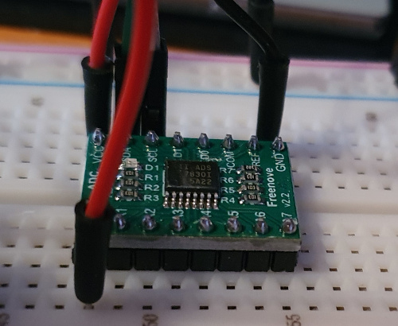
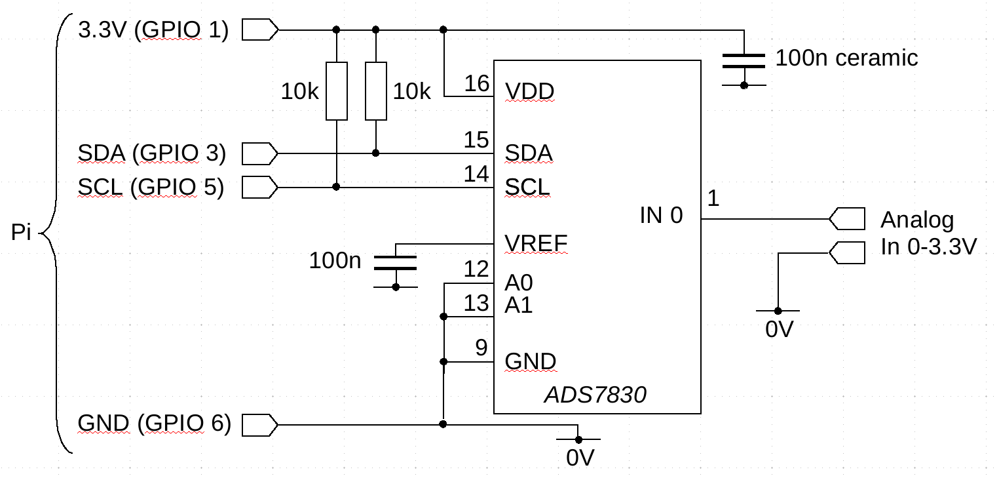

Using an I2C analog-to-digital converter chip with the Raspberry Pi, from the ground up
 Interfacing with analog devices or information sources is a key part of
most embedded Linux applications. Devices like the Rasperry Pi do not
usually have general-purpose analog inputs, although they might have
the ability to record analog audio.
Interfacing with analog devices or information sources is a key part of
most embedded Linux applications. Devices like the Rasperry Pi do not
usually have general-purpose analog inputs, although they might have
the ability to record analog audio.
Note:
It is not usually possible to repurpose an audio input for accepting sensor data. Audio inputs are usually AC-coupled, and won't work at all with the slowly-varying voltages that most sensors present.
In this article I describe how to use a simple I2C analog-to-digital converter (ADC) chip with the Raspberry Pi, for relatively undemanding applications, from first principles. By 'relatively undemanding' I mean reading the position of an analog joystick, or reading sensor data with a voltage range of a few volts. Or, perhaps, checking the voltage of a stand-by battery. I'm not talking about sampling millions of times a second, or with nanosecond precision, or handling inputs of microvolts. By 'first principles' I mean without the use of any libraries, and without any tools that are specific to a particular Linux distribution.
I'll be describing the details of connecting the hardware, and writing code in C to read the analog values. I'm aware that there are libraries that simplify interfacing devices like ADCs, but they completely conceal the low-level details, and are therefore of no educational value whatever.
There are other ways to connect an analog-to-digital converter to a Raspberry Pi, than using the I2C interface. However, I2C devices are cheap, easy to use, and easy to program. In this article, I use the Texas Instruments ADS7830 device, because I happened to have some in my parts bin. This device provides eight single-ended, or four different inputs, with 8-bit sampling precision, in a device that costs less than £3. It's ideal for remote sensing applications, because its power consumption is considerably less than a milliwatt.
Unfortunately for the experimenter, this device is available only in a 16-pin surface-mount package. It's about 2mm square. For those of us who lack the eyesight or fine motor control to solder up a device this size, there are alternatives.
There are many other devices with similar specifications to the ADS7830, which can be programmed in almost the same way. An example is the NXP PCF8591, which is available in a conventional DIP package, suitable for use with breadboard or strip-board. Another approach is to use an ADS7830 pre-soldered onto a DIP carrier. These devices are available from a number of suppliers, on eBay and elsewhere, for not much more money than the basic device.

Note that the carrier might have pull-up resistors on some of the digital inputs, as the example above does. I'll return to this point later.
About I2C
The I2C bus is a two-wire, relatively low-speed serial bus, that supports multiple devices in a chain. Each device has an address, so that devices on the same bus can be read and written independently. "Relatively low speed" is, of course, a vague term. Even at its fastest, I2C is much slower than modern USB, but it's still faster than, say, a serial terminal. The default I2C bus speed for the Raspberry Pi is 100 kbits/second, known in the I2C world as "standard" speed. In principle, the bus speed can be increased to 400 kbits/sec, or "fast". There are faster I2C modes, but I don't think the Pi supports them, and I've had reliability problems even with the "fast" mode.
I2C devices generally do not generate specific signalling voltages. Instead, they pull down the signal line voltage to represent a binary zero, or leave the line unchanged to indicate a one. In electronics terms, this arrangement is sometimes known as "open collector", as the I2C line would traditionally have been connected to the collector of a bipolar transistor. Of course, in order to send a signal, something in the connection chain must establish a definite voltage, so that the signal voltage can be measured by receiving devices. Usually, only one device in the chain needs to do this.
Most Raspberry Pi devices have their I2C connections "pulled up" to the 3.3V line using resistors of a few kilohms. This means that the I2C line voltages will wiggle between zero and 3.3V. Consequently, any I2C ADC used with the Pi must be willing to work with 3.3V logic levels. In practice, most modern devices do, although lower voltages are becoming more common.
About I2C ADCs
There are many such devices on the market, and they all seem to work in broadly the same way. In general, the controller (the Pi, in this case) will send a specific command byte on the I2C bus to start a conversion. Then the controller will read a byte (perhaps multiple bytes for higher-resolution devices) from the bus when converted data becomes available. These ADCs are generally polled by the controller, that is, the controller asks for values, one at a time. This mode of interaction can be relatively fast, but there's a comparatively high level of jitter -- that is, uncertainty in the timing of the conversions.
Some I2C devices provide additional features, such as analog outputs, in the same chip. They will generally operate in the same way as simple, input-only devices, but there will be additional I2C write operations to set the output voltages.
The ADS7830 device can, in principle, convert at 75,000 samples per second -- but I'm not convinced that a Raspberry Pi will be able to read the data at that speed. In practice, a conversion rate of a few thousand per second is about as much as can be expected, and that's if there's nothing else on the same bus. In practice, I2C ADCs are usually used to sample at rates between a few per hour to perhaps one hundred per second. Demanding applications will require both more expensive hardware, and more elaborate programming techniques.
In designing a system that uses an ADC, you'll need to give some thought to the signal voltage levels involved. The voltage sampled will be relative to some voltage reference or other. In general, the maximum digital value will be registered for an input voltage that matches the reference, and the minimum for zero volts, with respect to that reference.
If you're measuring (for example) a joystick position using a potentiometer, then you'll need to supply the potentiometer with a reference voltage. However, if you have a sensor with a specific voltage range, then ideally you'll need to supply a reference voltage that matches the peak sensor value. For example, if your sensor voltage varies between 0.5 and 1.0 volts, you'll ideally need to supply a 1.0 volt reference voltage. In fact, ideally you'll supply reference voltages for both the upper and lower voltage, but inexpensive ADC chips don't usually provide that kind kind of sophistication.
In general, if you don't supply a reference voltage, then the analogue voltage will be measured relative to some internal default. For the AD7830, the internal reference voltage, if it is enabled, is 2.5V. If it isn't enabled, then the reference voltage will depend on the supply voltage (more on this below).
Does it matter if you use a reference voltage that is higher than the sensor input voltage? Well, not always. If the input voltage is in the range 0.0-1.0 volts, and the reference is 2.5 volts, then all the measurements will lie in the bottom 40% of the range. The top 60% of the range will be unused. This means that your 8-bit ADC will be providing an effective resolution of about six bits. Whether that's a problem or not depends on the application.
However the reference voltage is set, care needs to be taken with the analogue input voltage applied to inexpensive ADC devices. The input voltage can safely exceed the reference voltage, although the measurements will be junk. But if the input exceeds the supply voltage by more than a few hundred millivolts, or goes negative, the device may be damaged.
Enabling I2C on the Pi
Recent Raspberry Pi units have two I2C devices, both of which
are nominally available on the GPIO header. However, device 0 is
normally reserved for internal use, so I'll be assuming the use of
device 1. When enabled, this device appears as /dev/i2c-1.
If you're running Raspbian Linux, there's a configuration utility which includes I2C. Otherwise, it's easy to set up manually.
First, you'll need to ensure that I2C is enabled in the
Pi firmware. For the standard firmware, this amounts to adding the
following values to /boot/config.txt:
dtparam=i2c_arm=on dtparam=i2c1=on i2c_arm_baudrate=100000
Depending on how your system is set up, the I2C modules may load automatically, or they may not. If they don't, you'll need to arrange for the relevant modules to be loaded before running your program. Typically:
modprobe i2c-dev modprobe i2c-bcm2835
If these set-up steps are correct, you should be able to use the
device /dev/i2c-1. It's worth installing the
standard i2c-tools package if practicable, because it
provides the i2cdetect utility. This utility will query
the I2C bus for devices, and you should get a response
from the ADC on its device port.
Hardware configuration
The diagram below shows what I believe is the simplest possible way to connect the ADS7830 to a raspberry pi. Only four connections are needed to the Pi -- two, in fact, if the ADC gets its 3.3V supply from some other place.

There are a few things to note about this simple circuit.
1. The manufacturer recommends a supply-decoupling ceramic capacitor of 100nF or similar, close to the ADC chip. This is to reduce the tendency of the ADC clock to pollute the supply connections. If the ADC chip is more than a few inches from the Pi, an additional 10uF (electrolytic) capacitor may be necessary. This is to reduce fluctuations in the supply voltage of the ADC chip caused by transient changes in current consumption.
2. In most cases, you won't need the 10k pull-up resistors, because the Pi has its own pull-ups. However, these internal pull-ups can be disabled in configuration -- you'll need to include them somewhere in that case. Using a relatively high value of pull-up allows the voltage to be pulled down using a smaller resistor, if necessary. If you get the ADC chip in a carrier, it might already have pull-up resistors in place, in which case you don't need to duplicate them.
3. The A0 and A1 pins are for address setting. The ADS7830 is pre-programmed to respond to device IDs in the range 0x48 - 0x4B. That is, there are four possible addresses, controlled by the settings of A0 and A1. If you want to be really lazy, you can leave A0 and A1 unconnected, and they'll float high. This will make the device address 0x4B.
4. Although it's not evident from the circuit diagram, the ADS7830 has an "analog side" (pins 1-8) and a "digital side" (pins 10-16). You can take advantage of this when laying out the circuit. Pin 9 is ground/0V for both the analog and digital sides -- there is no separate analogue ground.
5. The ADS7830 has different input modes, with the eight analog inputs forming four differential inputs. So IN0 and IN1 form a pair, and so on. But these aren't balanced inputs -- both inputs in the pair must have a voltage greater than 0V. You'll need level-shifting if you want to handle balanced differential inputs.
6. This circuit does not provide the ADC with a reference voltage. The voltage range of the input will depend on whether the internal reference is enabled or not (which is a matter of software configuration). If it is enabled, then the circuit will measure 0-2.5 volts. If the internal reference is not enabled, then the reference voltage will float up towards the supply voltage. With 3.3V supply, the reference voltage will actually equal the supply voltage, so the circuit will measure 0-3.3 volts (give or take a few millivolts). With higher supply voltages, things aren't as clear -- see the manufacturer's data sheet for full details. In any case, you'd want to question whether the supply voltage is stable enough to form a reference voltage for conversion.
It's difficult to give any more information about the voltage reference, because it depends entirely on the application.
Software
Programming the ADS7830 could hardly be easier -- all the difficult stuff is done by the kernel driver. It's certainly possible to get libraries that conceal the details but, frankly, there's simply no need to. To read analog values from the device in C, here's the basic process.
1. Open the device /dev/i2c-1 for reading and writing.
2. Issue an ioctl() call to set the device address.
3. Send the relevant command byte to the device to start conversion. The command byte will indicate which analog channel is to be read, among other things.
4. Read a byte from the device. This is the analogue value.
5. Repeat from (3) as necessary.
There are really only a few lines of code that are slightly complicated, and are likely to vary from one ADC device to another. Here is a snippet of code that forms the command byte. You can download the full source here.
int single_ended = 0x80; // bit 7 set for single-ended int dac_on_ref_off = 0x04; // bits 2-3 -- AD on, reference off int channel = 0x000; // bits 4-6 contain the channel number to sample int cmd = single_ended | dac_on_ref_off | channel; write (i2c, &cmd, 1);
To understand what's going on here, it's necessary to look at the manufacturer's data sheet, specifically page 13, which explains the format of the command byte.
From the data sheet we can see that the command byte contains three elements: one bit (bit 7) to indicate whether to use single-ended or differential conversion, three bits (4-6) to identify which of the eight channels to convert, and two bits (2-3) to control the control the conversion properties. In general, conversion starts when bit 2 is set (PDO in the data sheet). Bit 3 (called PD1) controls the internal reference. If PD1 is set (it isn't, in my example), then the reference voltage is enabled, and the analog value is measured in the range 0-2.5V. If PD1 isn't set, then the voltage range will be 0-3.3V. Taking these two settings together, the bottom four bits of the command byte are 0x04. The final value of the command byte is formed by bitwise OR-ing these three groups of bits.
One last point about software, in case it isn't obvious: the user
needs to have read and write permissions on /dev/i2c-1.
Some Raspberry Pi Linux distributions create a specific group to
own the device, others will require the use of sudo, etc.
Closing remarks
It's generally not difficult to connect sensors and analog devices to a Raspberry Pi, and interact with them using a C program. Sadly, even this relatively straightforward task is not well documented. Most of the examples you're likely to find are in Python, with all the details hidden inside inscrutable libraries. I hope this article makes good the documentation deficit in a small way.
Designers should be aware -- in case it isn't obvious -- that the really tricky part of analog-to-difficult conversion lies in getting the analog signals in the range accepted by the converter, and establishing an accurate reference voltage.
My article on temperature measurement extends this article with a simple, practical application.